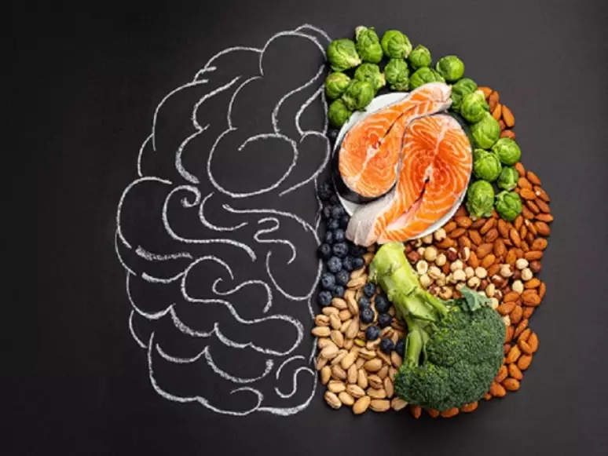

Nutricionismo
Dicas para Iniciar um Diário Planejador de Fitness
Tudo vai depender de seu peso corporal e de seus habitos uma conta basica de inicio para se ter uma ideia de como iniciar uma alimentação melhor uma conta que voce pode fazer é fazer uma conta de calorias que voce comeu e a conta de calorias
Vocẽ precisa fazer o TMB Para os homens = 66 + (13,8 x peso em kg) + (5 x altura em cm) – (6,8 x idade em anos) Para as mulheres = 655 + (9,6 x peso em kg) + (1,8 x altura em cm) – (4,7 x idade em anos)
